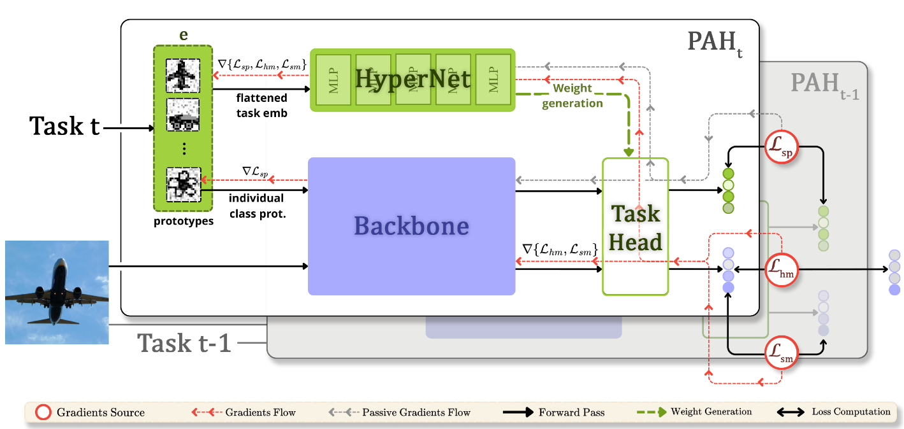
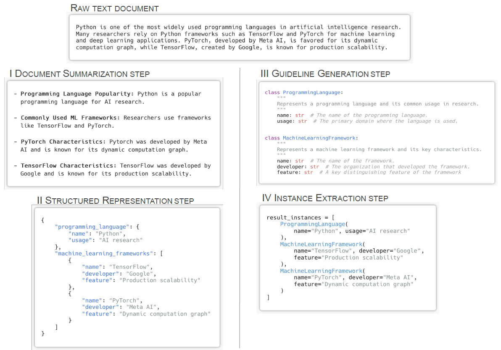
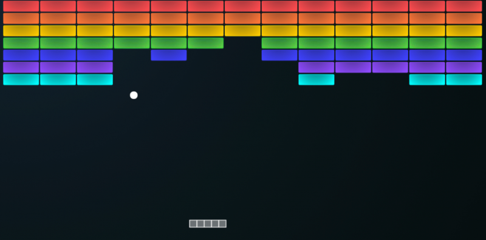
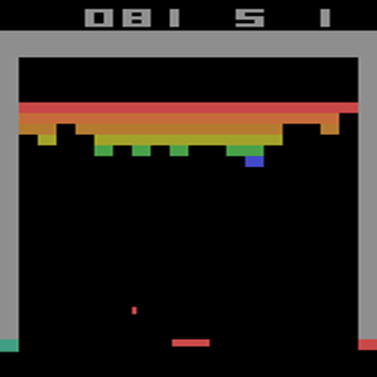
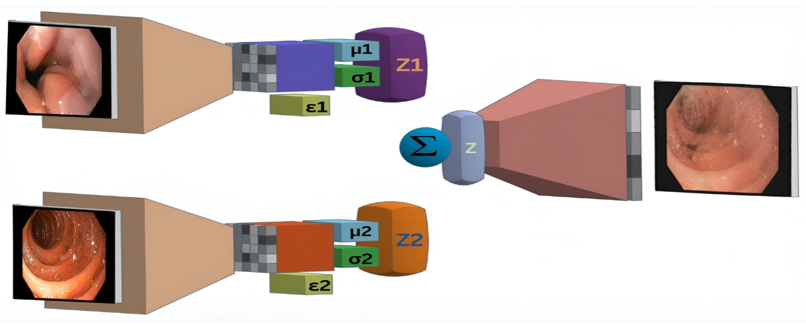
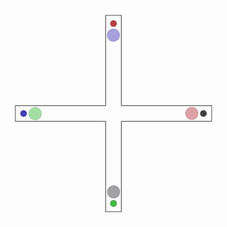

3D-to-4D Gaussian Scene Generation with Text-guided Diffusion
Thesis Commons / OSF Pre-Print 2025
I'm an MSc Data Science student at ETH Zürich and a Research Intern in the PRS Lab under the supervision of Konrad Schindler, where I work on Point Cloud encoders and knowledge distillation.
I hold a BSc in Artificial Intelligence from the Universitat Autònoma de Barcelona, and I spent my final year at the Technical University of Munich as a student researcher in the Computer Vision Group, under the supervision of Daniel Cremers.
I build and study machine learning and computer vision systems from a research perspective, with a current focus on 3D asset generation, 3D foundation models, and the geometry of deep representations.
I am also a Rafael del Pino Excellence Fellow.

My work focuses on deep learning, computer vision, and geometric representations.
Thesis Commons / OSF Pre-Print 2025


ACL Findings 2025

arXiv preprint arXiv:2507.23357


MICCAI '24 (Clinical Image-Based Procedures)
Frontiers in oncology 14, 1417862 (2024)

arXiv preprint arXiv:2412.20523
Short-form notes on 3D, deep learning, and representation learning.
Applying the Lottery Ticket Hypothesis to SIRENs. Exploring frequency carrier destruction and how high-magnitude weights act as the primary oscillators of Fourier decomposition.
Reflecting on recent experiments at ETH Zürich regarding motion-aware priors for 4D reconstruction.
Pi5 is an introductory and fun podcast that explains mathematics clearly in just 5 minutes. It's designed for everyone to enjoy, from total beginners to curiosity-driven learners. No dense jargon. Just interesting ideas explained simply.
Listen on Spotify ↗